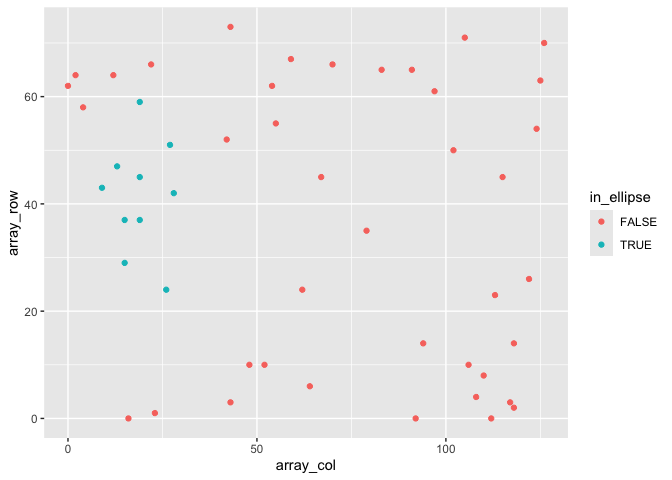

Introduction
tidySpatialExperiment provides a bridge between the SpatialExperiment package and the tidyverse ecosystem. It creates an invisible layer that allows you to interact with a SpatialExperiment object as if it were a tibble; enabling the use of functions from dplyr, tidyr, ggplot2 and plotly. But, underneath, your data remains a SpatialExperiment object.
tidySpatialExperiment also provides five additional utility functions.
Resources
If you would like to learn more about tidySpatialExperiment and tidyomics, the following links are a good place to start:
The tidyomics ecosystem also includes packages for:
-
Working with genomic features:
- plyranges, for tidy manipulation of genomic range data.
- nullranges, for tidy generation of genomic ranges representing the null hypothesis.
- plyinteractions, for tidy manipulation of genomic interaction data.
-
Working with transcriptomic features:
-
tidySummarizedExperiment, for tidy manipulation of
SummarizedExperimentobjects. -
tidySingleCellExperiment, for tidy manipulation of
SingleCellExperimentobjects. -
tidyseurat, for tidy manipulation of
Seuratobjects. - tidybulk, for bulk RNA-seq analysis.
-
tidySummarizedExperiment, for tidy manipulation of
-
Working with cytometry features:
- tidytof, for tidy manipulation of high-dimensional cytometry data.
-
And a few associated packages:
- tidygate, for manual gating of points in space.
- tidyheatmap, for modular heatmap contruction.
Functions and utilities
| Package | Functions available |
|---|---|
SpatialExperiment |
All |
dplyr |
arrange,bind_rows, bind_cols, distinct, filter, group_by, summarise, select, mutate, rename, left_join, right_join, inner_join, slice, sample_n, sample_frac, count, add_count
|
tidyr |
nest, unnest, unite, separate, extract, pivot_longer
|
ggplot2 |
ggplot |
plotly |
plot_ly |
| Utility | Description |
|---|---|
as_tibble |
Convert cell data to a tbl_df
|
join_features |
Append feature data to cell data |
aggregate_cells |
Aggregate cell-feature abundance into a pseudobulk SummarizedExperiment object |
rectangle |
Select cells in a rectangular region of space |
ellipse |
Select cells in an elliptical region of space |
gate_spatial |
|
gate_programmatic |
Installation
You can install the stable version of tidySpatialExperiment from Bioconductor.
if (!requireNamespace("BiocManager", quietly = TRUE))
install.packages("BiocManager")
BiocManager::install("tidySpatialExperiment")Or, you can install the development version of tidySpatialExperiment from GitHub.
if (!requireNamespace("pak", quietly = TRUE))
install.packages("pak")
pak::pak("william-hutchison/tidySpatialExperiment")Load data
Here, we attach tidySpatialExperiment and an example SpatialExperiment object.
# Load example SpatialExperiment object
library(tidySpatialExperiment)
example(read10xVisium)SpatialExperiment-tibble abstraction
A SpatialExperiment object represents assay-feature values as rows and cells as columns. Additional information about the cells is stored in the reducedDims, colData and spatialCoords slots.
tidySpatialExperiment provides a SpatialExperiment-tibble abstraction, representing cells as rows and cell data as columns, in accordance with the tidy observation-variable convention. The cell data is made up of information stored in the colData and spatialCoords slots.
The default view is now of the SpatialExperiment-tibble abstraction.
spe
# # A SpatialExperiment-tibble abstraction: 50 × 7
# # Features = 50 | Cells = 50 | Assays = counts
# .cell in_tissue array_row array_col sample_id pxl_col_in_fullres
# <chr> <lgl> <int> <int> <chr> <int>
# 1 AAACAACGAATAGTTC-1 FALSE 0 16 section1 2312
# 2 AAACAAGTATCTCCCA-1 TRUE 50 102 section1 8230
# 3 AAACAATCTACTAGCA-1 TRUE 3 43 section1 4170
# 4 AAACACCAATAACTGC-1 TRUE 59 19 section1 2519
# 5 AAACAGAGCGACTCCT-1 TRUE 14 94 section1 7679
# # ℹ 45 more rows
# # ℹ 1 more variable: pxl_row_in_fullres <int>But, our data maintains its status as a SpatialExperiment object. Therefore, we have access to all SpatialExperiment functions.
spe |>
colData() |>
head()
# DataFrame with 6 rows and 4 columns
# in_tissue array_row array_col sample_id
# <logical> <integer> <integer> <character>
# AAACAACGAATAGTTC-1 FALSE 0 16 section1
# AAACAAGTATCTCCCA-1 TRUE 50 102 section1
# AAACAATCTACTAGCA-1 TRUE 3 43 section1
# AAACACCAATAACTGC-1 TRUE 59 19 section1
# AAACAGAGCGACTCCT-1 TRUE 14 94 section1
# AAACAGCTTTCAGAAG-1 FALSE 43 9 section1
spe |>
spatialCoords() |>
head()
# pxl_col_in_fullres pxl_row_in_fullres
# AAACAACGAATAGTTC-1 2312 1252
# AAACAAGTATCTCCCA-1 8230 7237
# AAACAATCTACTAGCA-1 4170 1611
# AAACACCAATAACTGC-1 2519 8315
# AAACAGAGCGACTCCT-1 7679 2927
# AAACAGCTTTCAGAAG-1 1831 6400
spe |>
imgData()
# DataFrame with 1 row and 4 columns
# sample_id image_id data scaleFactor
# <character> <character> <list> <numeric>
# 1 section1 lowres #### 0.0510334Integration with the tidyverse ecosystem
Manipulate with dplyr
Most functions from dplyr are available for use with the SpatialExperiment-tibble abstraction. For example, filter() can be used to filter cells by a variable of interest.
spe |>
filter(array_col < 5)
# # A SpatialExperiment-tibble abstraction: 3 × 7
# # Features = 50 | Cells = 3 | Assays = counts
# .cell in_tissue array_row array_col sample_id pxl_col_in_fullres
# <chr> <lgl> <int> <int> <chr> <int>
# 1 AAACATGGTGAGAGGA-1 FALSE 62 0 section1 1212
# 2 AAACGAAGATGGAGTA-1 FALSE 58 4 section1 1487
# 3 AAAGAATGACCTTAGA-1 FALSE 64 2 section1 1349
# # ℹ 1 more variable: pxl_row_in_fullres <int>And mutate can be used to add new variables, or modify the value of an existing variable.
spe |>
mutate(in_region = c(in_tissue & array_row < 10))
# # A SpatialExperiment-tibble abstraction: 50 × 8
# # Features = 50 | Cells = 50 | Assays = counts
# .cell in_tissue array_row array_col sample_id in_region pxl_col_in_fullres
# <chr> <lgl> <int> <int> <chr> <lgl> <int>
# 1 AAACAACG… FALSE 0 16 section1 FALSE 2312
# 2 AAACAAGT… TRUE 50 102 section1 FALSE 8230
# 3 AAACAATC… TRUE 3 43 section1 TRUE 4170
# 4 AAACACCA… TRUE 59 19 section1 FALSE 2519
# 5 AAACAGAG… TRUE 14 94 section1 FALSE 7679
# # ℹ 45 more rows
# # ℹ 1 more variable: pxl_row_in_fullres <int>Tidy with tidyr
Most functions from tidyr are also available. Here, nest() is used to group the data by sample_id, and unnest() is used to ungroup the data.
# Nest the SpatialExperiment object by sample_id
spe_nested <-
spe |>
nest(data = -sample_id)
# View the nested SpatialExperiment object
spe_nested
# # A tibble: 1 × 2
# sample_id data
# <chr> <list>
# 1 section1 <SptlExpr[,50]>
# Unnest the nested SpatialExperiment objects
spe_nested |>
unnest(data)
# # A SpatialExperiment-tibble abstraction: 50 × 7
# # Features = 50 | Cells = 50 | Assays = counts
# .cell in_tissue array_row array_col sample_id pxl_col_in_fullres
# <chr> <lgl> <int> <int> <chr> <int>
# 1 AAACAACGAATAGTTC-1 FALSE 0 16 section1 2312
# 2 AAACAAGTATCTCCCA-1 TRUE 50 102 section1 8230
# 3 AAACAATCTACTAGCA-1 TRUE 3 43 section1 4170
# 4 AAACACCAATAACTGC-1 TRUE 59 19 section1 2519
# 5 AAACAGAGCGACTCCT-1 TRUE 14 94 section1 7679
# # ℹ 45 more rows
# # ℹ 1 more variable: pxl_row_in_fullres <int>Plot with ggplot2
The ggplot() function can be used to create a plot directly from a SpatialExperiment object. This example also demonstrates how tidy operations can be combined to build up more complex analysis.
spe |>
filter(sample_id == "section1" & in_tissue) |>
# Add a column with the sum of feature counts per cell
mutate(count_sum = purrr::map_int(.cell, ~
spe[, .x] |>
counts() |>
sum()
)) |>
# Plot with tidySpatialExperiment and ggplot2
ggplot(aes(x = reorder(.cell, count_sum), y = count_sum)) +
geom_point() +
coord_flip()
Utilities
Append feature data to cell data
The tidyomics ecosystem places an emphasis on interacting with cell data. To interact with feature data, the join_features() function can be used to append assay-feature values to cell data.
# Join feature data in wide format, preserving the SpatialExperiment object
spe |>
join_features(features = c("ENSMUSG00000025915", "ENSMUSG00000042501"), shape = "wide") |>
head()
# # A SpatialExperiment-tibble abstraction: 50 × 9
# # Features = 6 | Cells = 50 | Assays = counts
# .cell in_tissue array_row array_col sample_id ENSMUSG00000025915
# <chr> <lgl> <int> <int> <chr> <dbl>
# 1 AAACAACGAATAGTTC-1 FALSE 0 16 section1 0
# 2 AAACAAGTATCTCCCA-1 TRUE 50 102 section1 0
# 3 AAACAATCTACTAGCA-1 TRUE 3 43 section1 0
# 4 AAACACCAATAACTGC-1 TRUE 59 19 section1 0
# 5 AAACAGAGCGACTCCT-1 TRUE 14 94 section1 0
# # ℹ 45 more rows
# # ℹ 3 more variables: ENSMUSG00000042501 <dbl>, pxl_col_in_fullres <int>,
# # pxl_row_in_fullres <int>
# Join feature data in long format, discarding the SpatialExperiment object
spe |>
join_features(features = c("ENSMUSG00000025915", "ENSMUSG00000042501"), shape = "long") |>
head()
# tidySpatialExperiment says: A data frame is returned for independent data
# analysis.
# # A tibble: 6 × 7
# .cell in_tissue array_row array_col sample_id .feature .abundance_counts
# <chr> <lgl> <int> <int> <chr> <chr> <dbl>
# 1 AAACAACGAA… FALSE 0 16 section1 ENSMUSG… 0
# 2 AAACAACGAA… FALSE 0 16 section1 ENSMUSG… 0
# 3 AAACAAGTAT… TRUE 50 102 section1 ENSMUSG… 0
# 4 AAACAAGTAT… TRUE 50 102 section1 ENSMUSG… 1
# 5 AAACAATCTA… TRUE 3 43 section1 ENSMUSG… 0
# # ℹ 1 more rowAggregate cells
Sometimes, it is necessary to aggregate the gene-transcript abundance from a group of cells into a single value. For example, when comparing groups of cells across different samples with fixed-effect models.
The aggregate_cells() function can be used to aggregate cells by a specified variable and assay, returning a SummarizedExperiment object.
spe |>
aggregate_cells(in_tissue, assays = "counts")
# class: SummarizedExperiment
# dim: 50 2
# metadata(0):
# assays(1): counts
# rownames(50): ENSMUSG00000002459 ENSMUSG00000005886 ...
# ENSMUSG00000104217 ENSMUSG00000104328
# rowData names(1): feature
# colnames(2): FALSE TRUE
# colData names(3): in_tissue .aggregated_cells sample_idElliptical and rectangular region selection
The ellipse() and rectangle() functions can be used to select cells by their position in space.
spe |>
filter(sample_id == "section1") |>
mutate(in_ellipse = ellipse(array_col, array_row, c(20, 40), c(20, 20))) |>
ggplot(aes(x = array_col, y = array_row, colour = in_ellipse)) +
geom_point()
Interactive gating
For the interactive selection of cells in space, tidySpatialExperiment experiment provides gate(). This function uses tidygate, shiny and plotly to launch an interactive plot overlaying cells in position with image data. Additional parameters can be used to specify point colour, shape, size and alpha, either with a column in the SpatialExperiment object or a constant value.
spe_gated <-
spe |>
gate(colour = "in_tissue", alpha = 0.8)
A record of which points appear in which gates is appended to the SpatialExperiment object in the .gated column. To select cells which appear within any gates, filter for non-NA values. To select cells which appear within a specific gate, string pattern matching can be used.
# Select cells within any gate
spe_gated |>
filter(!is.na(.gated))
# # A SpatialExperiment-tibble abstraction: 4 × 8
# # Features = 50 | Cells = 4 | Assays = counts
# .cell in_tissue array_row array_col sample_id .gated pxl_col_in_fullres
# <chr> <lgl> <int> <int> <chr> <chr> <int>
# 1 AAACGAGACGG… TRUE 35 79 section1 2 6647
# 2 AAACTGCTGGC… TRUE 45 67 section1 2 5821
# 3 AAAGGGATGTA… TRUE 24 62 section1 1,2 5477
# 4 AAAGGGCAGCT… TRUE 24 26 section1 1 3000
# # ℹ 1 more variable: pxl_row_in_fullres <int>
# Select cells within gate 2
spe_gated |>
filter(stringr::str_detect(.gated, "2"))
# # A SpatialExperiment-tibble abstraction: 3 × 8
# # Features = 50 | Cells = 3 | Assays = counts
# .cell in_tissue array_row array_col sample_id .gated pxl_col_in_fullres
# <chr> <lgl> <int> <int> <chr> <chr> <int>
# 1 AAACGAGACGG… TRUE 35 79 section1 2 6647
# 2 AAACTGCTGGC… TRUE 45 67 section1 2 5821
# 3 AAAGGGATGTA… TRUE 24 62 section1 1,2 5477
# # ℹ 1 more variable: pxl_row_in_fullres <int>Details of the interactively drawn gates are saved to tidygate_env$gates. This variable is overwritten each time interactive gates are drawn, so save it right away if you would like to access it later.
# Inspect previously drawn gates
tidygate_env$gates |>
head()
# # A tibble: 6 × 3
# x y .gate
# <dbl> <dbl> <dbl>
# 1 4310. 3125. 1
# 2 3734. 3161. 1
# 3 2942. 3521. 1
# 4 2834. 3665. 1
# 5 2834. 4385. 1
# # ℹ 1 more row
# Save if needed
tidygate_env$gates |>
write_rds("important_gates.rds")If previously drawn gates are supplied to the programmatic_gates argument, cells will be gated programmatically. This feature allows the reproduction of previously drawn interactive gates.
important_gates <-
read_rds("important_gates.rds")
spe |>
gate(programmatic_gates = important_gates)) |>
filter(!is.na(.gated))# # A SpatialExperiment-tibble abstraction: 4 × 8
# # Features = 50 | Cells = 4 | Assays = counts
# .cell in_tissue array_row array_col sample_id .gated pxl_col_in_fullres
# <chr> <lgl> <int> <int> <chr> <chr> <int>
# 1 AAACGAGACGG… TRUE 35 79 section1 2 6647
# 2 AAACTGCTGGC… TRUE 45 67 section1 2 5821
# 3 AAAGGGATGTA… TRUE 24 62 section1 1,2 5477
# 4 AAAGGGCAGCT… TRUE 24 26 section1 1 3000
# # ℹ 1 more variable: pxl_row_in_fullres <int>Special column behaviour
Removing the .cell column will return a tibble. This is consistent with the behaviour in other tidyomics packages.
spe |>
select(-.cell) |>
head()
# tidySpatialExperiment says: Key columns are missing. A data frame is
# returned for independent data analysis.
# # A tibble: 6 × 4
# in_tissue array_row array_col sample_id
# <lgl> <int> <int> <chr>
# 1 FALSE 0 16 section1
# 2 TRUE 50 102 section1
# 3 TRUE 3 43 section1
# 4 TRUE 59 19 section1
# 5 TRUE 14 94 section1
# # ℹ 1 more rowThe sample_id column cannot be removed with tidyverse functions, and can only be modified if the changes are accepted by SpatialExperiment’s colData() function.
# sample_id is not removed, despite the user's request
spe |>
select(-sample_id)
# # A SpatialExperiment-tibble abstraction: 50 × 7
# # Features = 50 | Cells = 50 | Assays = counts
# .cell in_tissue array_row array_col sample_id pxl_col_in_fullres
# <chr> <lgl> <int> <int> <chr> <int>
# 1 AAACAACGAATAGTTC-1 FALSE 0 16 section1 2312
# 2 AAACAAGTATCTCCCA-1 TRUE 50 102 section1 8230
# 3 AAACAATCTACTAGCA-1 TRUE 3 43 section1 4170
# 4 AAACACCAATAACTGC-1 TRUE 59 19 section1 2519
# 5 AAACAGAGCGACTCCT-1 TRUE 14 94 section1 7679
# # ℹ 45 more rows
# # ℹ 1 more variable: pxl_row_in_fullres <int>
# This change maintains separation of sample_ids and is permitted
spe |>
mutate(sample_id = stringr::str_c(sample_id, "_modified")) |>
head()
# # A SpatialExperiment-tibble abstraction: 50 × 7
# # Features = 6 | Cells = 50 | Assays = counts
# .cell in_tissue array_row array_col sample_id pxl_col_in_fullres
# <chr> <lgl> <int> <int> <chr> <int>
# 1 AAACAACGAATAGTTC-1 FALSE 0 16 section1_… 2312
# 2 AAACAAGTATCTCCCA-1 TRUE 50 102 section1_… 8230
# 3 AAACAATCTACTAGCA-1 TRUE 3 43 section1_… 4170
# 4 AAACACCAATAACTGC-1 TRUE 59 19 section1_… 2519
# 5 AAACAGAGCGACTCCT-1 TRUE 14 94 section1_… 7679
# # ℹ 45 more rows
# # ℹ 1 more variable: pxl_row_in_fullres <int>
# This change does not maintain separation of sample_ids and produces an error
spe |>
mutate(sample_id = "new_sample")
# # A SpatialExperiment-tibble abstraction: 50 × 7
# # Features = 50 | Cells = 50 | Assays = counts
# .cell in_tissue array_row array_col sample_id pxl_col_in_fullres
# <chr> <lgl> <int> <int> <chr> <int>
# 1 AAACAACGAATAGTTC-1 FALSE 0 16 new_sample 2312
# 2 AAACAAGTATCTCCCA-1 TRUE 50 102 new_sample 8230
# 3 AAACAATCTACTAGCA-1 TRUE 3 43 new_sample 4170
# 4 AAACACCAATAACTGC-1 TRUE 59 19 new_sample 2519
# 5 AAACAGAGCGACTCCT-1 TRUE 14 94 new_sample 7679
# # ℹ 45 more rows
# # ℹ 1 more variable: pxl_row_in_fullres <int>The pxl_col_in_fullres and px_row_in_fullres columns cannot be removed or modified with tidyverse functions. This is consistent with the behaviour of dimension reduction data in other tidyomics packages.
# Attempting to remove pxl_col_in_fullres produces an error
spe |>
select(-pxl_col_in_fullres)
# Error in `select_helper()`:
# ! Can't select columns that don't exist.
# ✖ Column `pxl_col_in_fullres` doesn't exist.
# Attempting to modify pxl_col_in_fullres produces an error
spe |>
mutate(pxl_col_in_fullres)
# Error in `dplyr::mutate()`:
# ℹ In argument: `pxl_col_in_fullres`.
# Caused by error:
# ! object 'pxl_col_in_fullres' not foundCitation
If you use tidySpatialExperiment in published research, please cite The tidyomics ecosystem: enhancing omic data analyses.